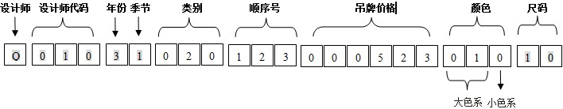
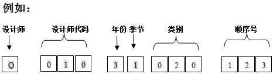
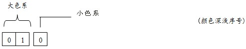

D2C编码体系
SKU编码 = 款号编码（12位）+吊牌价格（6位）+颜色（3位）+尺码（2位）

一：内部款号编码：
D2C内部款号的长度为12位数组成（从2013年开始）。
第1位数表示商品所属设计师，由该设计师姓氏的第一个字母表示；
第2-4位数表示设计师代码；
第5位数表示商品的年份；
第6位表示商品的季节；
第7、8、9位表示商品的类别；
第10、11、12位表示商品的顺序号；

1、 设计师姓氏
钱峰： Q
2、 设计师代码
钱峰： 001
3、年份
“ 1 ” 表示 2011年； “ 2 ”表示 2012年
“ 3 ” 表示 2013 年； ……以此类推。(2020年后需变更，以后每10年变更一次）
4、季度
“ 1 ”表示春季； “ 2 ”表示夏季；
“ 3 ”表示秋季； “ 4 ”表示冬季。
5、类别对照表
| 上下装 | 上装 | 下装 | 配饰 |
| 套装：010 | 针织上衣：030 | 裤：080 | 首饰：800（手镯、项链、胸花、头花、手链） |
| 连衣裙：020 | 雪纺上衣：040 | 裙：090 | 包：810 |
| 牛仔：170 | 真丝上衣：050 | —— | 皮带：820 |
| 连体裤：180 | 衬衫：060 | —— | 鞋子：830 |
| 针织衫：190 | 外套上衣：070 | —— | 围巾：840 |
| T恤：200 | 毛衫：100 | —— | 袜子：850 |
| 礼服：201 | 风衣：110 | —— | 帽子：860 |
| 吊带：202 | 长款大衣：120 | —— | 眼镜：870 |
| 背心：203 | 短款大衣：130 | —— | 手套：880 |
| 马甲：204 | 棉衣：140 | —— | 内衣：890 |
| 西装：205 | 羽绒衣：150 | —— | 手拎袋：900 |
| 夹克：206 | 皮草：160 | —— | 其他赠品：910 |
| 抹胸：207 | |||
| 披肩：208 |
6、顺序号
用“001、002、003……”表示。
二：商品吊牌价
商品吊牌价预留6位
例如：吊牌价为459元，用“000459”表示。
三：颜色色号
三位数的色号，前2位开始表示大类色系。第3位表示同一色系颜色排序，数字越小颜色越纯。

第3位表示：4表示米白色系，3表示本色系，2表示本白色系，1表示漂白色系；0表示最白的珍珠色……
颜色与代码对照表
色彩总表：从色号第二位起分类如下：
代码 |
01 |
02 |
03 |
04 |
05 |
06 |
07 |
08 |
09 |
10 |
颜色 |
白色 |
黑色 |
米色 |
红色 |
绿色 |
蓝色 |
灰色 |
紫色 |
棕色 |
橙/黄色 |
明细表：
注：其他色彩：111-藏青 112-金色 113-银色 114-藕粉色 115-裸色
| 01 白色系 | 02 黑色系 | 03 米色系 | 04 红色系 | 05 绿色系 |
| 010-珍珠色 | 020-黑色 | 030-米色 | 040-西瓜红 | 051-果绿 |
| 011-漂白 | 021-亚黑 | 031-棕米色 | 041-大红 | 052-军绿 |
| 012-本白 | 022-亮色 | 032-沙白 | 042-枣红 | 053-蓝绿 |
| 013-本色 | 023-亚光色 | 033-卡其 | 043-粉红 | 054-墨绿 |
| 014-米白 | 029-沙色 | 035-米黄 | 044-紫红 | 055-亮绿 |
| —— | —— | —— | 045-桔红 | 056-灰绿 |
| —— | —— | —— | 046-梅红 | 058-芥末绿 |
| —— | —— | —— | 047-铁锈红 | —— |
| —— | —— | —— | 048-肉粉色 | —— |
| —— | —— | —— | 049-桃红 | —— |
| 06 蓝色系 | 07 灰色系 | 08 紫色系 | 09 棕色系 | 10 橙/黄色 |
| 060-浅蓝 | 070-灰白 | 081-紫色 | 091-咖啡色 | 101-鹅黄 |
| 061-蓝色 | 071-浅灰 | 082-紫罗兰 | 092-棕色 | 102-桔黄 |
| 062-宝蓝 | 072-中灰 | 083-深紫 | 093-红咖 | 103-浅黄 |
| 063-深蓝 | 073-深灰 | 084-灰紫 | —— | 104-黄色 |
| 064-牛仔蓝 | 074-花灰 | 085-藕紫 | —— | 105-深黄 |
| 065-灰蓝 | —— | —— | —— | 106-粉桔 |
四：尺码对照表：
上衣类号型 |
155/80A（S码） |
160/84A（M码） |
165/88A（L码） |
170/92A（XL码） |
175/96A（XXL码） |
裙裤类号型 |
155/62A（S码） |
160/66A（M码) |
165/70A（L码) |
170/74A（XL码) |
175/78A（XXL码) |
毛衫类规格 |
75cm（S码) |
80cm（M码) |
85cm（L码) |
90cm（XL码) |
95cm（XXL码) |
五：尺码编号与实际衣服的尺码对应表：
01 |
S码 |
02 |
M码 |
03 |
L码 |
04 |
XL码 |
05 |
XXL码 |
06 |
XXXL码 |
07 |
……依此类推 |
99 |
均码 |